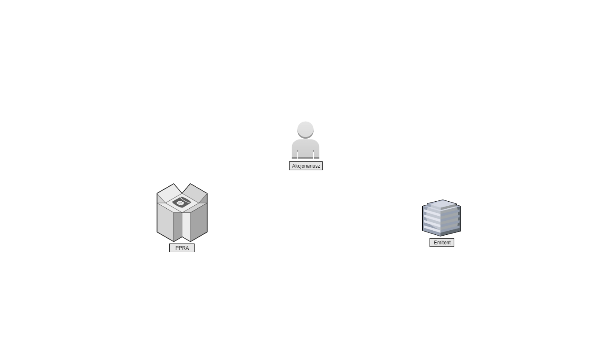
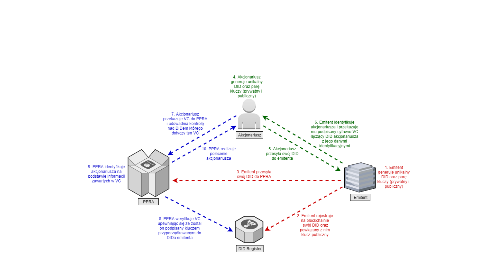
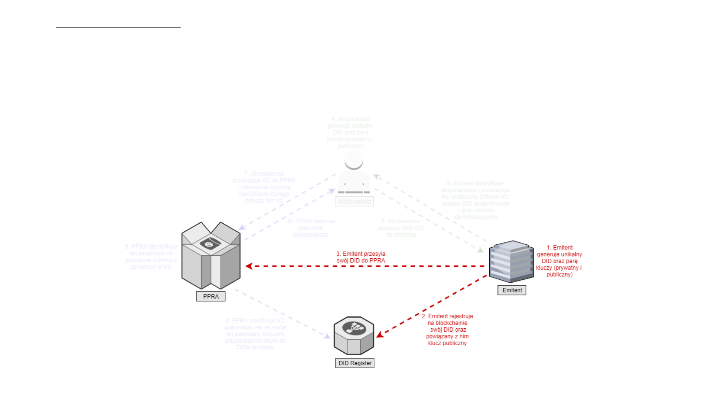
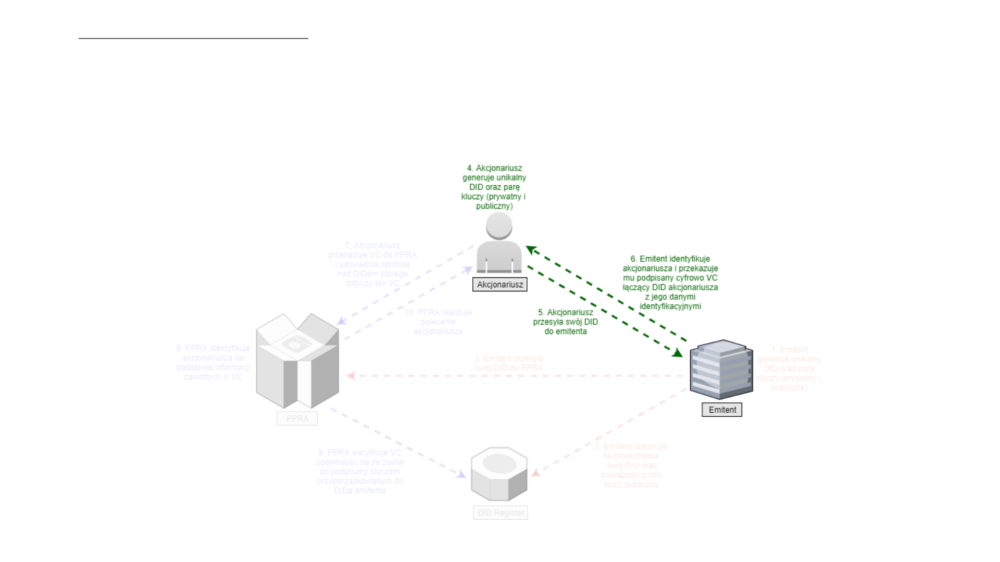
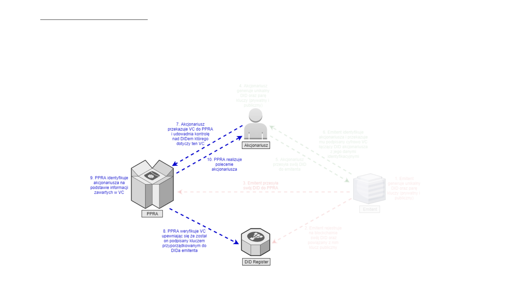

Identyfikacja Akcjonariusza
przez PPRA
na podstawie certyfikatu wystawionego przez Emitenta

Aktorzy: Emitent, PPRA, Akcjonariusz

Zarys całego procesu

Zarys całego procesu
1. Emitent generuje unikalny DID oraz parę kluczy (prywatny i publiczny)
2. Emitent rejestruje na blockchainie swój DID oraz powiązany z nim klucz publiczny
3. Emitent przesyła swój DID do PPRA
4. Akcjonariusz generuje unikalny DID oraz parę kluczy (prywatny i publiczny)
5. Akcjonariusz przesyła swój DID do emitenta
6. Emitent identyfikuje akcjonariusza i przekazuje mu podpisany cyfrowo VC łączący DID akcjonariusza z jego
danymi identyfikacyjnymi
7. Akcjonariusz przekazuje VC do PPRA i udowadnia kontrolę nad DIDem którego dotyczy ten VC
8. PPRA weryfikuje VC upewniając się że został on podpisany kluczem przyporządkowanym do DIDa
emitenta
9. PPRA identyfikuje akcjonariusza na podstawie informacji zawartych w VC
10. PPRA realizuje polecenie akcjonariusza

Emitent tworzy swój unikalny identyfikator i przekazuje
go do PPRA
Proces "emitent-PPRA"
1. Emitent generuje unikalny DID oraz parę kluczy (prywatny i publiczny)
2. Emitent rejestruje na blockchainie swój DID oraz powiązany z nim klucz
publiczny
3. Emitent przesyła swój DID do PPRA
Emitent tworzy swój unikalny identyfikator i przekazuje
go do PPRA
Proces "emitent-PPRA"

Emitent tworzy certyfikat potwierdzający tożsamość
akcjonariusza i przekazuje go akcjonariuszowi
Proces "akcjonariusz-emitent"
4. Akcjonariusz generuje unikalny DID oraz parę kluczy (prywatny i publiczny)
5. Akcjonariusz przesyła swój DID do emitenta
6. Emitent identyfikuje akcjonariusza i przekazuje mu podpisany cyfrowo VC
łączący DID akcjonariusza z jego danymi identyfikacyjnymi
Emitent tworzy certyfikat potwierdzający tożsamość
akcjonariusza i przekazuje go akcjonariuszowi
Proces "akcjonariusz-emitent"

PPRA dokonuje identyfikacji akcjonariusza i realizuje
jego polecenie
Proces "akcjonariusz-PPRA"
7. Akcjonariusz przekazuje VC do PPRA i udowadnia kontrolę nad DIDem którego
dotyczy ten VC
8. PPRA weryfikuje VC upewniając się że został on podpisany kluczem
przyporządkowanym do DIDa emitenta
9. PPRA identyfikuje akcjonariusza na podstawie informacji zawartych w VC
10. PPRA realizuje polecenie akcjonariusza
PPRA dokonuje identyfikacji akcjonariusza i realizuje
jego polecenie
Proces "akcjonariusz-PPRA"